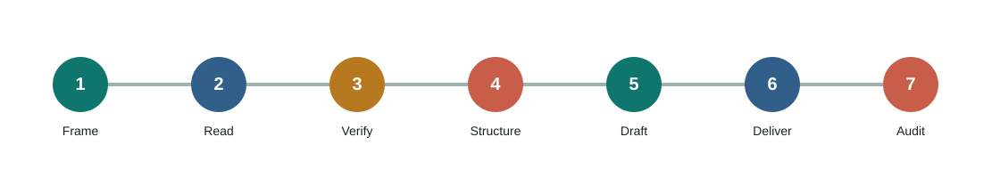

browser-lane
Read attachments, pages, papers, and current facts.
Traceable sources · bounded claims · verifiable artifacts
Choose a task, then move through source reading, verification, original drafting, DOCX delivery, and privacy review. This is a repeatable writing workflow, not a one-click virality claim.
Each stage leaves an inspectable result, so the process does not jump from attachment to draft or from save call to completion.

Audience, length, tone, format, and acceptance.
Direct content, inference, and missing context.
Authoritative checks for current and high-stakes claims.
Rebuild around reader needs, not source order.
Short paragraphs, defined terms, nearby limits.
Render DOCX and clear private metadata.
Reopen and inspect content, count, and privacy.
They are composable capabilities. Public writing is not a sixth lane.
Read attachments, pages, papers, and current facts.
Create only the diagrams and visual briefs that help.
Turn the method into a public documentation surface.
Order multiple articles, dependencies, and insertions.
Handle ambiguity, evidence, originality, and privacy.
Style is the final layer; facts, originality, artifacts, and privacy come first.
Separate supported, inferred, uncertain, and opinion.
Do not preserve headings, sentence order, or layout.
Check count, links, metadata, and the real file.
Remove paths, accounts, contacts, secrets, and hidden context.
The Skill is platform-neutral; DOCX rendering is an optional local Python tool.
npx skills add sushuqiong/ai-knowledge-writing-skill --skill ai-knowledge-writing-skill -g -ypython scripts/render_docx.py --input templates/article.example.json --output dist/example.docx